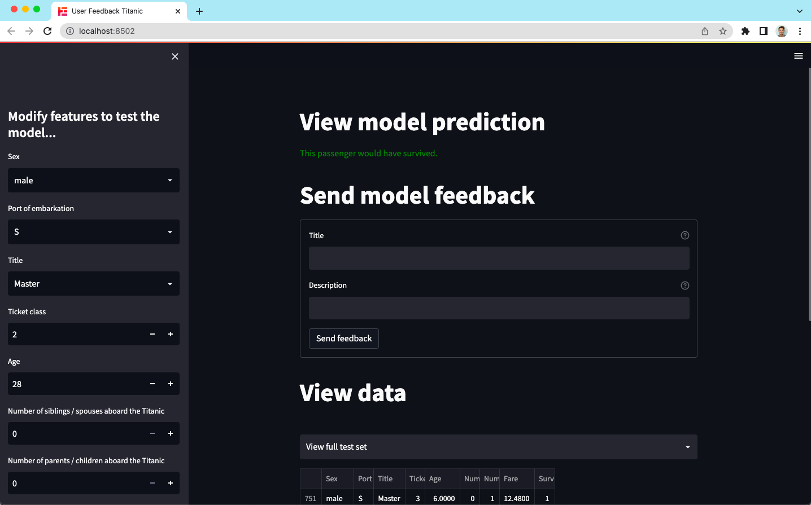

Welcome to the trubrics-sdk
Minimise AI Risk, Maximise Adoption
The trubrics-sdk is a python library for validating machine learning with data science and domain expertise. This is achieved by collecting business user feedback, creating ML validations with this feedback, and building repeatable validation checklists - a trubric.
Key Features
- ML model validation with the ModelValidator
- Feedback collection on ML models / data from users with the FeedbackCollector
- Tracking and management of validation runs and feedback in the Trubrics platform


Install (Python 3.7+)
Validate a model with the ModelValidator
There are three basic steps to creating model validations with the trubrics-sdk:
- Initialise a
DataContext, that wraps ML datasets and metadata into a trubrics friendly object. - Build validations with the
ModelValidator, using theDataContextand any ML model (scikit-learn or any python model). TheModelValidatorholds a number of out-of-the-box validations and can also be used to build custom validations from a python function. - Group validations into a
Trubric, which is saved as a .json file and rerun against any model / dataset.
Try out these steps by creating your own Trubric with this example:
from trubrics.context import DataContext
from trubrics.example import get_titanic_data_and_model
from trubrics.validations import ModelValidator, Trubric
_, test_df, model = get_titanic_data_and_model()
# 1. Init DataContext
data_context = DataContext(
testing_data=test_df, # pandas dataframe of data to validate model on
target="Survived",
)
# 2. Build validations with ModelValidator
model_validator = ModelValidator(data=data_context, model=model)
validations = [
model_validator.validate_performance_against_threshold(metric="accuracy", threshold=0.7),
model_validator.validate_feature_in_top_n_important_features(feature="Age", top_n_features=3),
]
# 3. Group validations into a Trubric
trubric = Trubric(
name="my_first_trubric",
data_context_name=data_context.name,
data_context_version=data_context.version,
validations=validations,
)
trubric.save_local(path="./my_first_trubric.json") # save trubric as a local .json file
trubric.save_ui() # or to the Trubrics platform
The Trubric defines the gold standard of validations required for your project, and may be used to validate any combination of model and DataContext. Once saved as a .json, the trubric may be run directly from the CLI.
See a full tutorial on the titanic dataset here.
Collect user feedback with the FeedbackCollector
Trubrics feedback components help you collect feedback on your models with your favourite python web development library. Once feedback has been collected from business users, it should be translated into validation points to ensure repeatable validations throughout the lifetime of the model. Add the trubrics feedback component to your ML apps now to start collecting feedback:
| Framework | Getting Started Code Snippets |
|---|---|
| [Streamlit](https://streamlit.io/) |
Dash and Gradio integrations
| Framework | Getting Started Code Snippets |
|---|---|
| [Dash](https://dash.plotly.com/) | |
| [Gradio](https://gradio.app/) |
You can view our demo user feedback app, using the streamlit feedback collector and an example experimentation tool, on the titanic dataset & model on Hugging Face Spaces, or run it locally with the CLI command:

Track all validation runs and feedback in Trubrics
The Trubrics platform allows teams to collaborate on model issues and track validation changes. Please get in touch with us here to gain access to Trubrics for you and your team.
trubrics init will initialise your terminal and authenticate with your Trubrics account

trubrics run will run your validations from the terminal and track them in Trubrics

Watch our getting started demo
Created: March 7, 2023